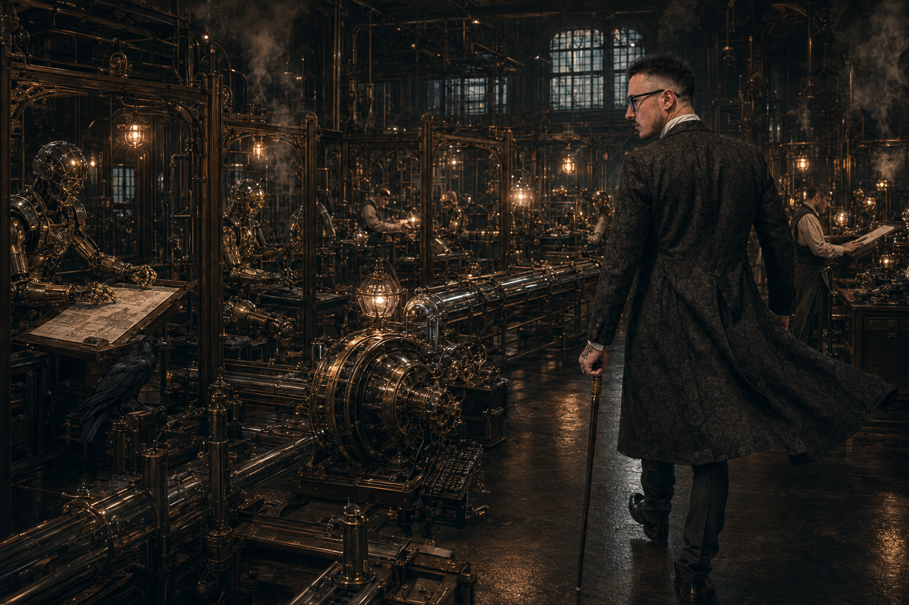

THE INCONVENIENCE · ISSUE 002
THE MACHINE
THAT BUILDS
THE MACHINE
Automation is easy.
Authority is expensive.
- Build the Builder
- Labour Needs a Workshop
- Memory Is Infrastructure
- The Factory Must See Itself
- Tools That Build Better Tools
- Autonomy Without Abdication

Editor's Note
The Workshop After Midnight
There is a peculiar stage in building something alone when productivity becomes the enemy.
At first, speed feels like progress. You learn another tool. Add another model. Write another script. Automate another task. Suddenly the work that took an afternoon takes an hour, and the work that took an hour takes ten minutes.
This is intoxicating. It is also where many people stop.
They build a faster pair of hands and mistake it for a factory.
Issue 001 concerned itself with a simple problem: one person cannot sustainably remain the entire organisation. Labour must be externalised. Memory must leave the skull. Authority must be distinguished from execution.
But delegation creates another problem. If you give five workers five jobs without constructing anywhere for those jobs to occur, you have not created an organisation. You have created a room containing six confused people.
Artificial intelligence does not magically escape this problem.
A model can write code. An agent can inspect a repository. Another can run tests. A third can research documentation while a fourth proposes an architecture.
Wonderful.
Now answer the less glamorous questions.
Where do they work?
What may they change?
What must they preserve?
Where is the evidence?
What constitutes completion?
Who decides an experiment becomes production?
What happens when you leave the room?
That is the subject of Issue 002.
Not the machine.
The machine that builds the machine.
Software labour is becoming astonishingly cheap to instantiate. Organisation is not. Memory is not. Judgement is not. Authority is certainly not.
You can summon another agent in seconds. You cannot summon institutional coherence nearly so easily.
The future belongs to whoever constructs the better workshop around the model.
Welcome back.
The machinery is running.
01 · Build the Builder
Output is useful.
Leverage compounds.
There is an obvious way to improve a product: work on the product. Fix the defect. Add the feature. Improve the interface. Rewrite the function. Ship the release.
Perfectly reasonable. It is also one of the easiest ways to spend your entire life standing at the same workbench.
Every product contains two systems. The first is visible: the application, model, service, interface or device. The second is mostly invisible: tests, development environment, build system, documentation, deployment, decision memory, failure inspection and the mechanisms through which work is assigned, reviewed, accepted and rejected.
The first system produces value.
The second determines how expensive producing value will remain.
Spend three hours fixing one class of failure and you improve the product once. Spend those same three hours creating a mechanism that detects that failure, gathers evidence and presents a repair candidate before the defect reaches you, and you improve every future encounter with it.
One produces output. The other produces leverage.
01 · Continued
The product is what the workshop produces.
The workshop determines what producing anything will cost you next time.
Infrastructure rarely poses nicely for screenshots. That is precisely why it is so often neglected.
07A better test harness makes every future change safer. A better repository index makes every future investigation faster. A better evidence format makes every future review clearer. A better worker protocol makes every future model easier to substitute. A better memory system prevents the same decision being rediscovered from scratch.
None of these things necessarily make today's feature look more impressive.
That is precisely why they are neglected.
The amateur instinct is to ask: What can I build today?
The more interesting question is: What can I build today that makes tomorrow's builder stronger?
If a model is treated merely as a faster typist, the economics are straightforward. Human requests task. Machine performs task. Human requests next task.
Congratulations. You have invented an extraordinarily elaborate keyboard.
But once the surrounding system captures context, decisions, failures, evidence, tests and resulting changes, the workshop starts improving.
A failed build becomes a regression test. A repeated investigation becomes a diagnostic tool. A successful repair becomes a reusable procedure. A recurring architectural question becomes encoded policy. A tedious handoff becomes a protocol. A missing capability becomes the specification for a new tool.
Development itself becomes material.
The founder increasingly designs boundaries, interfaces, feedback loops, evidence requirements, memory, authority, and the conditions under which work may become reality.
This is not abdication. It is architecture.
Each solved problem should leave behind more than a solved problem. It should leave behind a better workshop.
02 · Labour Needs a Workshop
Concurrency wearing a clever hat.
Adding more workers does not automatically create more progress. Sometimes it creates more noise. The same is true of AI.
You can have one model writing code, another researching, another testing, another reviewing, and a fifth attempting to coordinate the others.
Without structure, that is not a workforce.
It is concurrency wearing a clever hat.
Useful labour needs somewhere to happen. A worker should know what it owns, what it may change, what it must preserve, what evidence it must return, and where its authority ends.
A good workshop gives each piece of labour a bounded space: a repository, branch, worktree, task, toolset and contract for completion.
The worker does not merely "do something useful." It performs a defined operation and returns something inspectable.
Parallel work creates collisions. Two workers can modify the same assumption. One can invalidate another's work. A model can finish successfully according to its own interpretation while missing the actual objective.
The more capable the workers become, the more expensive ambiguity becomes.
Good boundaries make workers replaceable. That is a feature. The work survives because the workshop carries the structure, not the worker.
The useful question is not How many agents can I run?
It is: How independently can useful work proceed without losing coherence?
Intelligence without structure is a crowd. Give labour a workshop and it becomes a system.09
03 · Memory Is Infrastructure
A system that forgets must repeatedly become intelligent.
The model can reason beautifully. Then the session ends.
Tomorrow it asks why the architecture looks like this. Next week another worker rediscovers the same constraint. A month later somebody "fixes" the thing that was deliberately designed that way.
The problem is not intelligence.
The problem is memory.
A context window is not institutional memory. Neither is a chat transcript.
Memory becomes infrastructure when the project can reliably preserve decisions, evidence, constraints, failures, ownership, provenance and the reasons behind them.
Knowing what happened is useful. Knowing why prevents history from being accidentally rewritten.
Without that, every new worker arrives in a world without archaeology. It sees code but not the argument that produced it. A restriction but not the incident that made it necessary. An awkward interface but not the compatibility promise hiding behind it.
This is how intelligent systems produce stupid regressions.
The founder's brain is a terrible database: fast, associative, creative, occasionally brilliant — also tired, distracted, lossy and inconveniently attached to a biological organism that requires sleep.
The goal is not to remember everything. It is to preserve the things whose absence would make future work worse.
A context window can remember a conversation. Infrastructure remembers why the system became what it is.12
04 · The Factory Must See Itself
Activity is not progress.
A system that can act but cannot observe itself is not autonomous.
It is unsupervised.
If work is happening across multiple tools, agents, models, branches and machines, the workshop needs to know what is actually going on.
Who is working? On what? Where? Using which resources? What changed? What failed? What passed? What waits for approval? What evidence came back?
Without that visibility, automation becomes theatre. Everything looks busy. Nothing is trustworthy.
A useful factory must expose its own state: telemetry, logs, tests, worker status, resource use, handoffs, failures, branches and approvals.
Once the system can see itself, it can detect drift: a worker stuck in a loop, a test repeatedly failing, a branch diverging, a model consuming resources without useful output, a handoff that never arrived.
These are not cosmetic details. They are the difference between activity and progress.
The goal is not to watch every moving part for entertainment. It is to make the workshop legible enough that intervention becomes deliberate instead of desperate.
That is how autonomy becomes governable.
A factory that cannot see itself cannot tell the difference between progress and motion.13
05 · Tools That Build Better Tools
The workshop folds back on itself.
The first useful automation saves time.
The next useful automation changes what is possible.
A tool that fixes one problem is valuable. A tool that helps build future tools is leverage.
A test generator. A model evaluator. A code indexer. A capability scaffold. A training harness. A system that notices repeated manual work and proposes a reusable mechanism.
At that point, development begins to fold back on itself.
The workshop is no longer only producing products. It is producing better ways to produce.
This is the recursive layer. Not magical self-improvement. Not a machine escaping into the night.
Just a disciplined loop: observe work, identify friction, encode improvement, test it, retain what works. Then repeat.
A better tool can accelerate future code. Better code can improve the tool. A better model can propose stronger infrastructure. Stronger infrastructure can evaluate the next model more rigorously.
But recursion without governance is just a faster way to create expensive mistakes.
What may be changed? What requires review? What counts as evidence? What is reversible? What may become canonical?
The machine may help build the next machine.
It does not get to decide, unilaterally, what the workshop should become.
The most valuable tool is often the one that improves the next tool.16
06 · Autonomy Without Abdication
Capability is not authority.
Autonomy is useful.
Abdication is not.
A system can be allowed to act independently without being allowed to redefine its own authority.
A worker may modify code. It may not decide that safety constraints are inconvenient.
A model may propose a capability. It may not decide that capability belongs in production.
An agent may complete a task. It may not decide that completion means acceptance.
This is where governance becomes architecture rather than paperwork.
Authority should be explicit. Who may act? What may they change? What requires approval? What is reversible? What becomes canonical?
The more capable the system becomes, the more important those answers become.
Because capability scales faster than judgement.
A powerful system with vague authority is not freedom.
It is liability.
The point of autonomy is to remove unnecessary human labour.
Not to remove human accountability.
Capability can expand without authority expanding with it.17

The Inconvenient Truth
Close the laptop.
Leave the room.
What happens?
If every useful process stops because the founder stopped typing, then the system was never autonomous.
It was responsive. Fast, perhaps. Impressive, perhaps. But still entirely dependent on one person remaining physically present to keep reality moving.
That is not a workshop.
That is a nervous system with a single brain stem.
The goal is not to remove the founder. It is to remove the requirement that the founder personally animate every operation.
The workshop should remember. Workers should know where they belong. The system should expose what it is doing. Tools should make future tools easier to build. Authority should remain clear.
The real shift is not from human to machine.
It is from person-dependent execution to system-dependent continuity.
If progress stops whenever you stop typing, you have not built an autonomous workshop.
You have built a faster keyboard.
THE FOUNDER IS NOT THE RUNTIME.
Filed under: Systems · Governance · AI workshops · Memory · Observability · Issue 002
20